During the EMI 2025 conference in Anaheim, California, Mohamed Gomaa presented his research on May 28, 2025. His presentation, titled "Adaptive Model Uncertainty Quantification in Real-Time Hybrid Simulation"
 |
01 June 2025
During the EMI 2025 conference in Anaheim, California, Edwin D. Patino presented his research on May 28, 2025. His presentation, titled "Cascade Control Strategy for Multi-Actuator Transfer Systems in Hybrid Simulation"
 |
01 June 2025
During the EMI 2025 conference in Anaheim, California, Lalit Dongare presented his research on May 28, 2025. His presentation, titled "System identification of heat pump dynamics for cyber physical testing of space habitats"
 |
01 June 2025
During the EMI 2025 conference in Anaheim, California, Manuel Salmeron presented his research on May 29, 2025. His presentation, titled "RTHS for Damage and Degradation Assessment: Challenges and Recent Advances"
 |
01 June 2025
On May 22, 2025, Francisco Peña, Ph.D., P.E., assumed the role of President-Elect of the Indiana Structural Engineers Association (ISEA). Dr. Peña, a structural engineer at Wiss, Janney, Elstner Associates, Inc. in Indianapolis, brings extensive experience structural failure investigation, vibration monitoring, and probabilistic analysis under natural hazards, among other areas.
 |
25 May 2025
From May 20 to May 22, 2025, the 7th Midwest Smart Structures Colloquium (MSSC7) was held at the 4-H Memorial Camp in Monticello, Illinois, drawing participants from UIUC and Purdue universities. The event featured student-led PechaKucha-style presentations across multiple sessions, a keynote lecture by Dr. Brian Eick, outdoor team-building activities, karaoke night, and group socializing. The camp provided an ideal environment for academic exchange and networking.
25 May 2025
During the EMI 2024 conference in Chicago, Illinois, Oscar Forero presented his research on May 31, 2024. His presentation, titled "Experimental Development of a Seismic Isolation Device for Lunar Surface Habitat Resilience."
01 June 2024
During the EMI 2024 conference in Chicago, Illinois, Lissette Iturburu presented her research on May 30, 2024. Her presentation, titled "Llm-based structure drawing generation from natural language description using retrieval-augmented generation technique"
01 June 2024
During the EMI 2024 conference in Chicago, Illinois, Herta Montoya presented her research on May 31, 2024. Her presentation, titled "Thermomechanical Real-Time Hybrid Simulation for Lunar Habitats"
 |
01 June 2024
During the EMI 2024 conference in Chicago, Illinois, Manuel Salmerón achieved notable recognition by winning second place in the Structural Health Monitoring and Control Committee Student Paper Competition on May 29, 2024. His award-winning paper was titled "Real-Time Hybrid Simulation for Infrastructure Degradation Assessment: Conceptual Framework and Illustrative Application."
 |
01 June 2024
During the EMI 2024 conference in Chicago, Illinois, Manuel Salmerón delivered two presentations on May 30, 2024. His first presentation was titled "Real-Time Hybrid Simulation for Infrastructure Degradation Assessment: Conceptual Framework and Illustrative Application," and his second was "Reinforcement Learning-based Bridge Inspection Management."
 |
01 June 2024
During the sixth Midwest Smart Structures Colloquium (MSSC) on April 26, 2024, Dr. Alana Lund delivered the keynote presentation titled "Development and Experimental Verification of Track Nonlinear Energy Sink with Rotational Mass for Seismically-Excited Buildings."
 |
29 April 2024
During the ASCE Earth & Space 2024 Conference, on Apr 16, 2024, Ph.D. student Oscar Forero gave a presentation titled "Seismic Vulnerability Assessment of Non-Structural Elements Inside an Inflatable Lunar Habitat".
 |
16 April 2024
During the 2024 Purdue Road School, on Mar 12, 2024, Ph.D. student Manuel Salmeron gave a presentation titled "Cost Quantification of Construction Defects on Concrete Decks".
 |
12 March 2024
Graduate student Christina McNichol was awarded Indiana Structural Engineers Association (ISEA) Scholarship.
15 February 2024
During 14th International Workshop on Structural Health Monitoring in San Jose, California, Sep 12-14, 2023, Professor Shirley Dyke was awared "2021 SHM person-of-the-year" award.
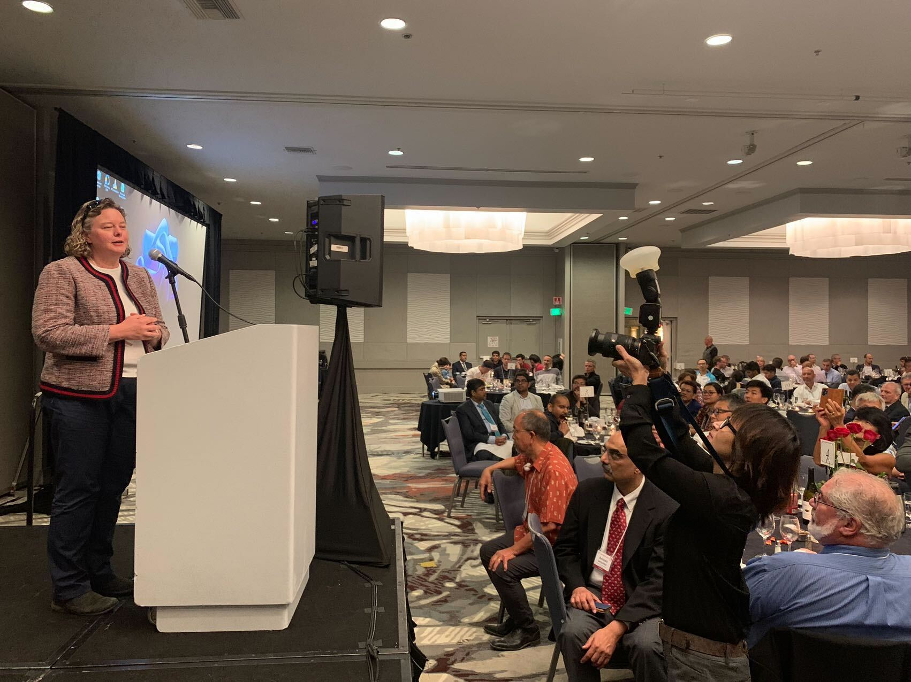 |
12 September 2023
During 14th International Workshop on Structural Health Monitoring in San Jose, California, Sep 12-14, 2023, Professor Shirley Dyke gave a presentation titled Reinforcement Learning-based Bridge Inspection Management.
12 September 2023
During the Engineering Mechanics Institute Conference 2023 in Atlanta, Georgia, Jun 6-Jun 9, 2023, PhD Student Herta Montoya won first place in the best student paper competition.
6 June 2023
During the Engineering Mechanics Institute Conference 2023 in Atlanta, Georgia, Jun 6-Jun 9, 2023,
Automated Image Localization to Support Rapid Building Reconnaissance in A Large-scale Area presented by Xiaoyu Liu
Thermomechanical Real-Time Hybrid Simulation: Identification, Control, and Experimental Implementation presented by Herta Montoya
The Role of Digital Twins for Predictive Maintenance of Concrete Deck Bridges presented by Manuel Salmeron
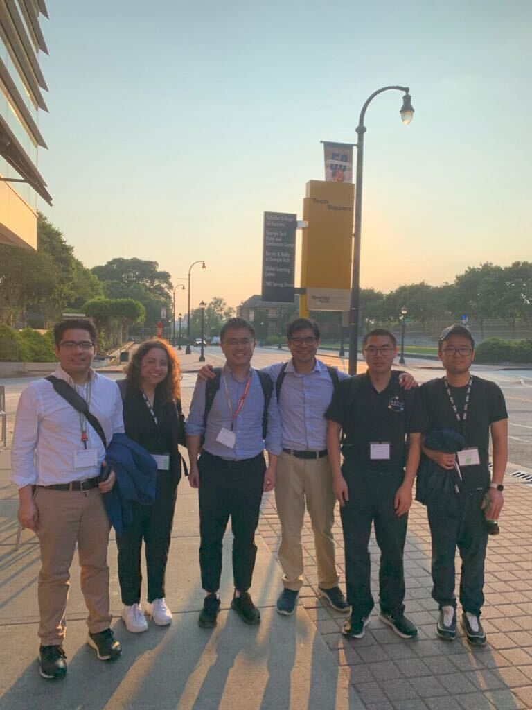 |
6 June 2023
During the CEGSAC Research Symposium in Purdue University, April 21, 2023, PhD student Herta Montoya was awarded with the 2nd place for the best poster presentation award
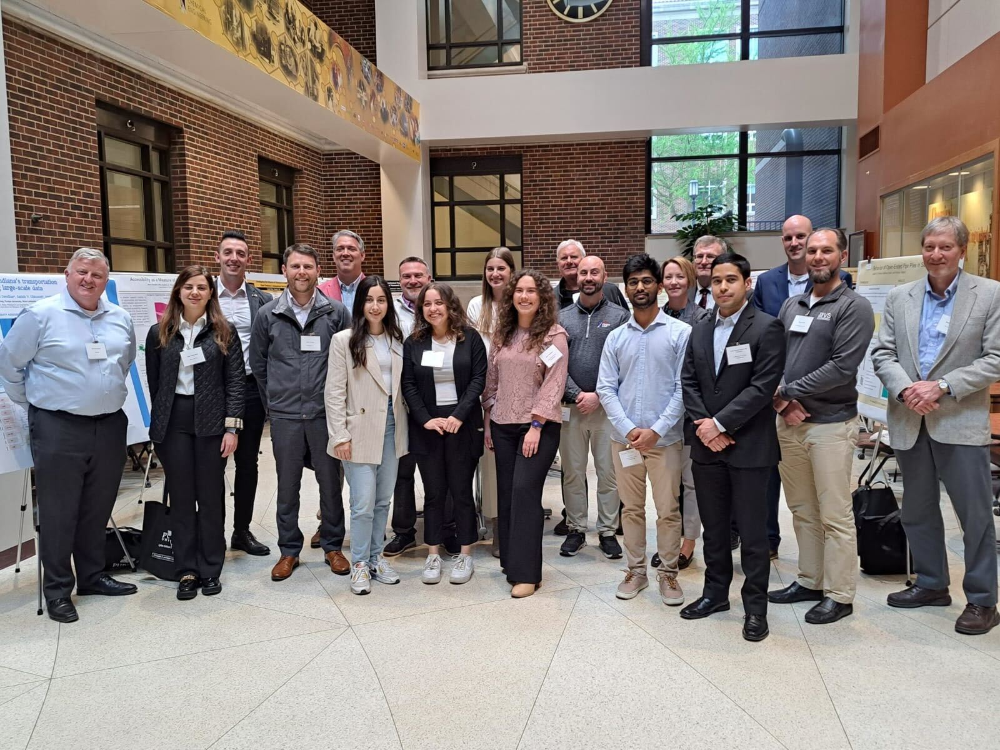 |
21 April 2023
In the 5th Midwest Smart Structure Colloquium in University of Illinois Urbana Champaign, April 14 - 16, 2023, we visited 4-H camp and participated several activities with UIUC SSTL team. several members of the IISL were recognized for the quality of their presentations, as listed below
1st Place
Herta Montoya
2nd Place
Benjamin Wogen
3rd Place
Montahareh Mirfarah
Honorable Mentions
Edwin Patino
Juan Nicolas Villamizar
Xiaoyu Liu
Manuel Salmeron
Xin Zhang
Mahindra Rautela
 |
 |
| First Place Presenter - Herta Montoya | Second Place Presenter - Benjamin Wogen |
 |
 |
| Third Place Presenter - Montahareh Mirfarah | Honorable Mentioned Presenters |
 |
 |
| IISL and SSTL | Board Game |
 |
 |
| Sing | Soccer |
14 April 2022
During the Engineering Mechanics Institute Conference 2022 in Baltimore, Maryland, May 31-Jun 4, 2022,
Using Information Fusion and Image Classification to Automatically Classify Post-Event Building Damage State presented by Xiaoyu Liu, with co-authors Lissette Iturburu, Shirley Dyke, Ali Lenjani, Julio Ramirez, Xin Zhang
Thermomechanical Cyber-Physical Testing: Control Requirements presented by Herta Montoya, with co-authors Herta Montoya, Amin Maghareh, Shirley Dyke, Arturo Montoya
Machine-Aided Bridge Deck Condition Evaluation Analysis presented by Xin Zhang, with co-authors Benjamin Wogen, Shirley Dyke, Julio Ramirez, Randall Poston, Xiaoyu Liu, Lissette Iturburu
Automating the Classification of Seismically Vulnerable Concrete Buildings presented by Lissette Iturburu, with co-authors Jean Kwannandar, Shirley Dyke, Julio Ramirez, Xin Zhang
 |
31 May 2022
Prof. Dyke was awarded the 2022 George W. Housner Structural Control and Monitoring Medal in recognition of ourstanding research contributions to the broad field of structural control and health monitoring. (Link)
 |
20 April 2022
Prof. Shirley Dyke, Herta Montoya, Juan Park and Zixin Wang delivered a presentation entitled Resilient Extra Terrestrial Habitats at Indiana Structural Engineering Association Spring Conference in Indianapolis March 03, 2022.
03 March 2022
Alana Lund, post doctor in civil engineering, delivered a presentation at Mechanistic Machine Learning and Digital Twins for Computational Science Conference in San Diego, entitled The Role of Digital Twins for Cyber-Physical Testing.
07 February 2022
Montoya Herta, PhD in civil engineering, gave a presentation at 40th International Modal Analysis Conference in Orlando, entitled Variational filter for Predictive Modeling of Structural Systems.
26 September 2021
Dr. Yuguang Fu joined the faculty in the School of Civil and Environmental Engineering at the Nanyang Technological Univeristy, Singapore.
01 August 2021
Johnny Condori Uribe and Manuel Salmerón, PhD students in civil engineering at Purdue, designed a real-time hybrid simulation (RTHS) experiment in Purdue’s Intelligent Infrastructure Systems Laboratory (IISL).
07 May 2020
Alana Lund, a fourth year PhD student in civil engineering gave a seminar at Purdue University School of Civil Engineering entitled, Bayesian Inference: A Tool for Predictive Modeling and Design.
17 November 2020
Prof. Dyke was invited to participate in a panel discussion to represent the Resilient Extraterrestrial Habitats institute. The panel was titled Enabling a Sustained Human Presence on the Moon, at the SPARC Space Symposium, University of Washington Space Policy & Research Center.
06 November 2020
Dr. Yuguang Fu gave a seminar at Purdue University School of Civil Engineering entitled, Smart Internet of Things Systems for Sustainable Civil Infrastructure Management under Multiple Hazards.
13 October 2020
Dr. Jongseong (Brad) Choi joined the faculty in the Department of Mechanical Engineering at the The State University of New York at Korea (SUNY Korea), Stony Brook University.
01 August 2020
Alana Lund, a fourth year PhD student in civil engineering, was selected to participate in the Rising Stars in Computation and Data Science Workshop. Hosted by the Oden Institute for Computational Engineering and Sciences at UT Austin, Rising Stars is an intensive workshop for female graduate students and postdocs who are interested in pursuing academic and research careers.
20 February 2020
Corey Beck, a second year master student in civil engineering, was awarded Dwight D. Eisenhower Transportation Fellowship. The project is entitled: Rapid Vulnerability Assessment of Interconnected Infrastructure Networks: A Probabilistic Approach. The project focuses on developing a probabilistic methodology for rapidly assessing the overall vulnerability of bridge networks to hazards such as seismic risk. The methodology focuses on developing fragility functions for independent bridges and assessing the overall vulnerability of connected bridges (e.g. a series of adjacent bridges on a route) using a joint probability distribution.
15 January 2020
Herta Montoya, a first year PhD student in civil engineering, was awarded 2nd place in the ASCE Dynamics Committee student paper presentation at the Engineering Mechanics Conference in Pasadena California on July 18-21, 2019. The title of her talk was: Experimental Verification of Servo-Hydraulic Actuator Modeling for RTHS of a Multi-Degree-Of-Freedom System, presented by Herta Montoya, with co-authors Amin Maghareh, Johnny Condori, and Shirley Dyke.
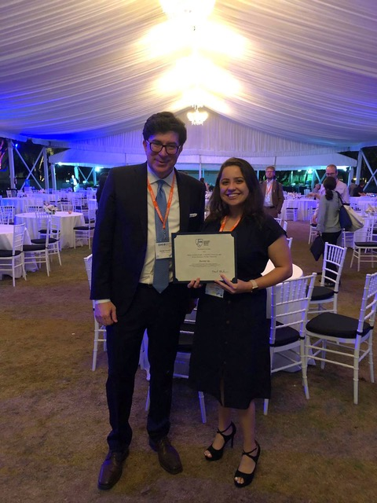 |
2 June 2019
During the ASCE Engineering Mechanics Institute Conference in Pasadena, California June 19-21, 2019,
Evaluation of Energy and Power Flow in a Nonlinear Energy Sink Attached to a Linear Primary Dynamic System Presented by Christian Silva, with co-authors Shirley Dyke, Amin Maghareh, James Gibert
Global Sensitivity Analysis for the Design of Nonlinear Identification Experiments Presented by Alana Lund, with co-authors Shirley Dyke, Wei Song, Ilias Bilionis
Real-time Hybrid Simulation of Highly Nonlinear Devices Using the Particle Filter Presented by Johnny Condori, with co-authors Amin Maghareh, Shirley Dyke
Automated Image Localization and 3D Reconstruction for Post-Event Building Reconnaissance Presented by Xiaoyu Liu, with co-authors Chul min Yeum, Shirley Dyke, Ali Lenjani, Jongseong Choi
Reslience-oriented Design Framework for Resilient Extraterrestrial Habitats, presented by Dr. Shirley Dyke with co-authors Amin Maghareh, Ali Lenjani, Shirley Dyke, Karen Marais, Antonio Bobet, Julio Ramirez, Dawn Whitaker, Anahita Modiriasari, Audai Theinat
2 June 2019
Dr. Daniel Gomez presented "Problema de Referencia para Simulaciones Híbridas en Tiempo Real” at the recent IX Colombian Earthquake Engineering Conference held in Cali Colombia May 29-31, 2019.
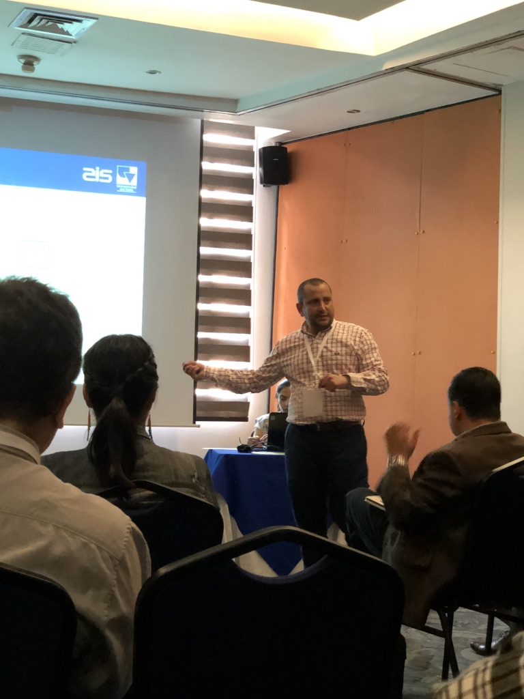 |
2 June 2019
Prof. Shirley Dyke delivered a keynote talk entitled “The pursuit for resilience: Harnessing cyber-physical simulation.” at the recent IX Colombian Earthquake Engineering Conference held in Cali Colombia May 29-31, 2019.
2 June 2019
The 4th Midwest Smart Structures Colloquium was held in Purdue University, West Lafayette, IN on April 12 - 13, 2019. Dr. Mohammad Jahanshahi's group was the first to participate in this event. All IISL members enjoyed the badminton competition, the BBQ time, Neil Armstrong exhibition, and on-campus tour just as much as enjoyed all the presentations. Several members of the IISL were recognized for the quality of their presentations, as listed below.
1st Place
Alana Lund
2nd Place
Christian Silva
Honorable Mentions
Sandra Vallizimar
Seungwook Seok
Xiaoyu Liu
1st Time Attendee 1st Place
Corey Beck
 |
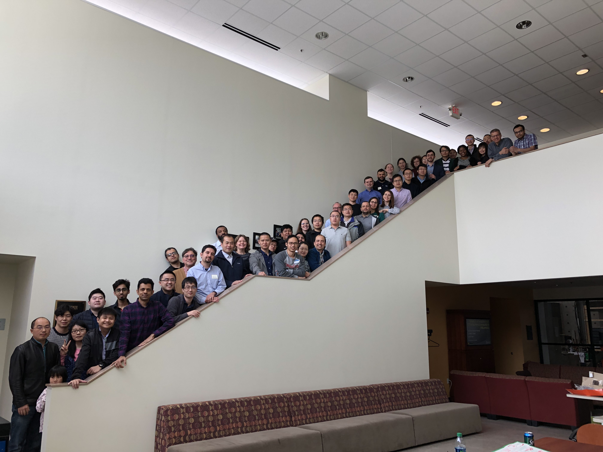 |
| First Place Presenter - Alana Lund | IISL and SSTL members at Bowen Laboratory, Purdue University |
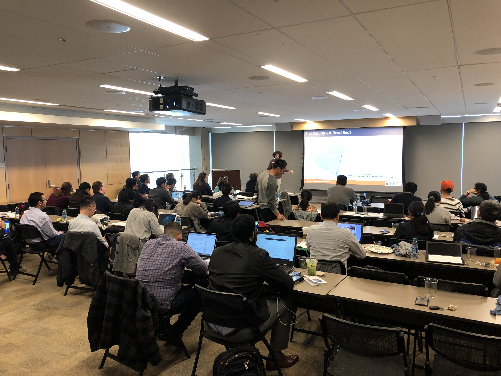 |
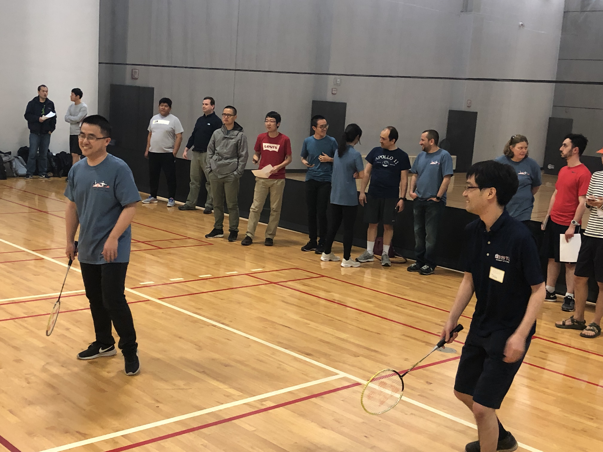 |
| PechaKucha Presentations | Badminton Compatition |
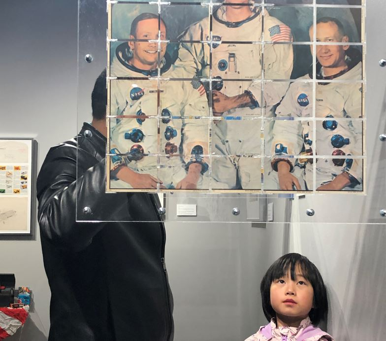 |
 |
| Neil Armstrong Exhibition | Purdue Campus Tour |
16 April 2019
Herta Motoya has been awarded Dwight David Eisenhower Transportation Graduate Fellowship on March 23, 2019. DDETFP Graduate Fellowship provides funding for students to pursue Master's or Doctoral degrees in transportation-related disciplines.
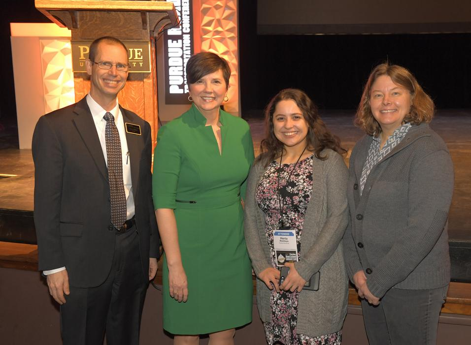 |
25 March 2019
This recently published paper has been selected as the Editor's Choice. The paper is available for free during the next two months. See here: link
Yeum, C. M., Dyke, S.J., Benes, B., Hacker, T., Ramirez, J., Lund, A., & Pujol, S., (2019). Postevent Reconnaissance Image Documentation Using Automated Classification. Journal of Performance of Constructed Facilities. 33(1), 04018103. DOI: 10.1061/(ASCE)CF.1943-5509.0001253.
Here deep convolutional neural network algorithms are successfully implemented to extract robust features of key visual contents in the images. A schema is designed based on the realistic needs of field teams examining buildings. A significant number of images collected from past earthquakes are used to train robust classifiers to automatically classify the images. The classifiers and associated schema are used to automatically generate individual reports about damaged buildings.
9 February 2019
Prof. Akira Wada, excutive director, Japan academic network for disaster reduction, delivered a special talk in Bowen Laboratory in Purude University. He is one of Japan's leading experts in structural engineering, with an emphasis on seismic design and vibration mitigation technologies. In the presentation, he presented a summarized version of one of his proposals entitled "Moving toward cities where earthquakes will not cause a grievous disaster". IISL members were invited to this seminar and had exellent time with his talk.
12 October 2018
Prof. Shirley Dyke and Ilias Bilionis with the Center for Resilient Infrastructures, Systems, and Processes (CRISP) received seed grant award from College of Engineering center at Purdue University. The title of this research is "Automating Exposure and Probabilistic Vulnerability Quantification for Assets in the Built Environment using Street-View Images".
19 August 2018
Prof. Shirley Dyke taught a short course on Real-time Hybrid Simulation at the Escuela Colombiana de Ingenieria Julio Garavito in Bogota, Colombia on August 13-16, 2018. The focus of the first part of the course was on the essentails of experimental structural dynamics methods. The second part introduced the fundamentals of the RTHS method, components of an RTHS, and how to configure a successful RTHS and design controllers.In the final part she discuss some of the recent developments in this important emerging class of cyber-physical experimentation, and specifically the ways in which it has been used across the US.Several case studies were presented and the new benchmark control problem on RTHS was discussed.
19 August 2018
Francisco Peña received the 2018 Magoon Award for Excellence in Teaching from the College of Engineering. The Magoon award recognizes outstanding teaching assistants and instructors. Francisco was nominated for his outstanding collaboration as TA in CE49800 - Civil Engineering Design (Senior Design)
27 April 2018
Alana Lund as been selected as one of just 100 women across the nation to receive the P.E.O. Scholar Award for the 2018-2019 academic year. Being selected as a P.E.O. Scholar is a prestigious award recognizing scholarly excellence, academic achievement, and aggressive career goals. Alana’s significant contributions toward advancing nonlinear system identification and disaster informatics are enabling new generation of data-based methods to respond to and recover from catastrophic events.
3 April 2018
Prof. Shirley Dyke was a panelist at the Smart and Connected Communities PI Meeting in Kansas City on March 26th, 2018. The panel session was organized by the FHWA/NSF and the topic was Active Infrastructure of the Future.
27 March 2018
Amin Maghareh was recipient of the Spring/Summer 2017 CE Best Dissertation Award with the dissertation entitled Nonlinear Robust Framework for Real-time Hybrid Simulation of Structural Systems: Design, Implementation, and Validation
10 December 2017
The 3rd Midwest Smart Structures Colloquium was held in and around the University of Illinois on October 6 - October 8, 2017. The IISL members enjoyed evening at the country park, introduced ourselves to fellow researchers, shared ideas, and helped to make this year's colloquium successfully. Several members of the IISL were recognized for the quality of their presentations, as listed below.
Alana Lund was awarded 2nd place for the Best Presentation award at the 3rd Midwest Smart Structures Colloquium held in Champaign, Illinois on October 6 - 8th 2017.
Honorable Mentions
Amin Maghareh
Christian Silva
Chul Min Yeum
Daniel Gomez
Johnny Condori Uribe
Jongseong 'Brad' Choi
 |
 |
| Second Place Presenter - Alana Lund | IISL and SSTL members at UIUC |
 |
 |
| Presentation | Kunnekuk County Park Tour |
 |
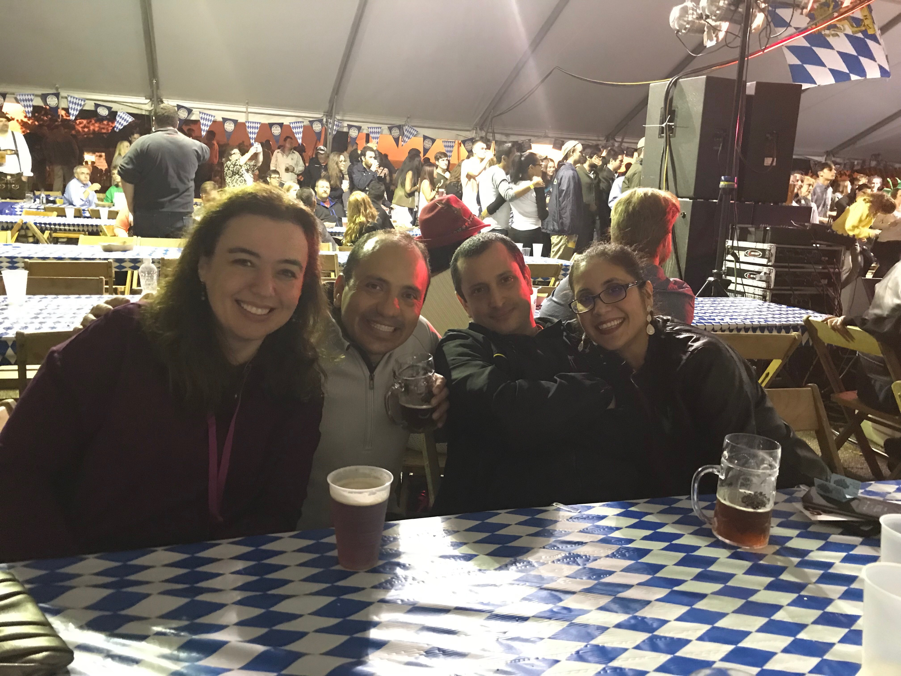 |
| Oktoberfest | Oktoberfest |
10 October 2017
Chul Min Yeum, PhD in Civil Engineering, delivered a presentation at the 11th IWSHM in Stanford California given on Thursday, Sep 14th, 2017. His talk was entitled Autonomous Visual Inspection for Civil Infrastructure using UAVs. Here is the link for the video demonstration.
30 September 2017
Daniel Gomez, PhD Candidate in Civil Engineering, was awarded a 2017 SURF “Best Mentor” award on August 4th. Daniel advised two undergraduate researchers on independent projects during the 2017 summer. The two projects were titled Hazard Assessment of Meteoroid Impact for the Design of Lunar Habitats by Herta Montoya, and Evaluation of Radiation and Design Criteria for a Lunar Habitat by Hayley Bower. These projects were related to the RETH, Resilient ExtraTerrestrial Habitats, project funded by the Purdue Provost’s Office.
5 August 2017
Prof. Shirley Dyke delivered a keynote presentation at the 9th ANCRISST in Tokyo Japan. Her talk was entitled Hybrid Cyber-Physical Experimentation for Smart Structures was given on Saturday, July 22nd, 2017.
22 July 2017
Prof. Shirley Dyke was invited to deliver a talk at the Asia-Pacific Program in Smart Structures in Tokyo Japan. Her talk was entitled Real-time Hybrid Simulation to Enable Multi-Hazard Engineering was given on Thursday, July 20th, 2017.
22 July 2017
Prof. Shirley Dyke, Amin Maghareh, Francisco Pena, Johnny Condori , and Alana Lund presented their recent research at the 2017 Engineering Mechanics Institute Conference in San Diego, California on June 4-7. The work presented included the presentations:
Image Localization for Computer-Enhanced Visual Inspection of Civil Infrastructure, authored by S.J. Dyke, C.M. Yeum, and J. Choi
Experimental Evaluation of Targeted Energy Transfer System using Real-Time Hybrid Simulation, authored by A. Maghareh, Christian Silva, and S.J. Dyke
Uncertainty Quantification of Fragility Functions with Limited Data, authored by F. Pena, I. Bilionis, and S.J. Dyke
Experimental Validation of Parallel Real-Time Hybrid Simulation using CyberMech, authored by J. Condori, J. Orr, D. Ferry, A. Maghareh, S. Seilabi, S.J. Dyke, A. Prakash
PLSE Structural Identification and the Value of Systematic Data Processing, authored by A. Lund, S.J. Dyke, G. Ou, and B. Xu
4-7 June 2017
Chul Min Yeum was recognized as the Fall 2016 CE Outstanding Graduate Student. Chul Min graduated in December 2016 with the dissertation entitled Computer Vision-Based Structural Assessment Exploiting Large Volumes of Images
24 January 2017
Prof. Shirley Dyke was invited to deliver a lecture at the PRE-EMPTIVE Workshop in Santiago Chile. Her talk was entitled Cyber-Physical Testing for Examining Protective Devices: …our approach to test design and execution was given on Saturday, January 7th, 2017.
24 January 2017
Daniel Gomez and Prof. Shirley Dyke presented papers at the 16th World Conference on Earthquake Engineering in Santiago Chile January 9-13, 2017. The papers were:
Hybrid Simulation: Empowering Earthquake Engineering Experimentation, authored by D. Gomez, S.J. Dyke and A. Maghareh
Structured Annotation of Semantic Contents on Earthquake Reconnaissance Images, authored by C.M. Yeum, S.J. Dyke, J. Ramirez, T. Hacker, S. Pujol, and C. Sim
24 January 2017
Amin Maghareh was invited to deliver a seminar at the University of Illinois on Tuesday, January 24th. The title of his seminar was Nonlinear Robust Framework for Real-time Hybrid Simulation of Structural Systems: Design, Implementation, and Validation
24 January 2017
Along with other Purdue Faculty members, Dr. Dyke helped host members of the Federal Highway Administration and the Indiana Department of Transportation at their visit to Purdue. After a brief presentation on the research conducted at the Intelligent Infrastructure Systems Laboratory, Dr. Dyke and Alana Wilbee led the visitors on a tour of the Bowen Laboratory.
 |
 |
| Alana Explains some Recent Student Projects | Dr. Dyke Highlights the Utility of the Strong Wall in the Development of Vision-Based Measurement Tools |
2 December 2016
The IISL hosted the 2nd Midwest Smart Structures Colloquium at Purdue University on September 30 - October 2. The group was pleased to welcome Dr. Chung-Bang Yun as the Keynote Speaker. In addition to learning from his lecture, participants from the IISL and SSTL shared their research in seminar sessions and socialized at various group activities.
Several members of the IISL were recognized for the quality of their presentations, as listed below.
Daniel Gomez - First Place
Chul Min Yeum - Third Place
Amin Maghareh - Honorable Mention
Francisco Pena - Honorable Mention
Christian Silva - Honorable Mention
Alana Wilbee - Honorable Mention
 |
 |
| First Place Presenter | Third Place Presenter |
 |
 |
| Honorable Mentions | IISL and SSTL Members in Front of Hovde Hall |
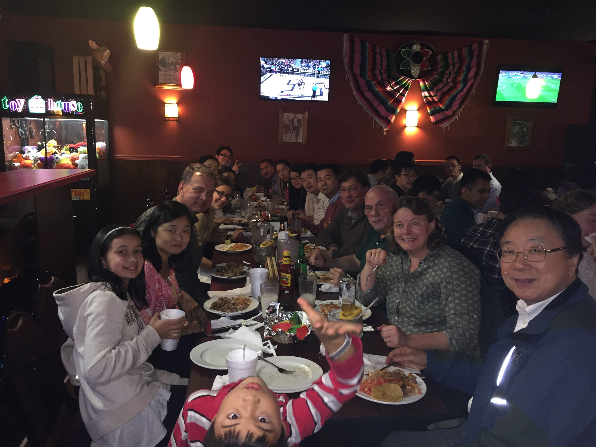 |
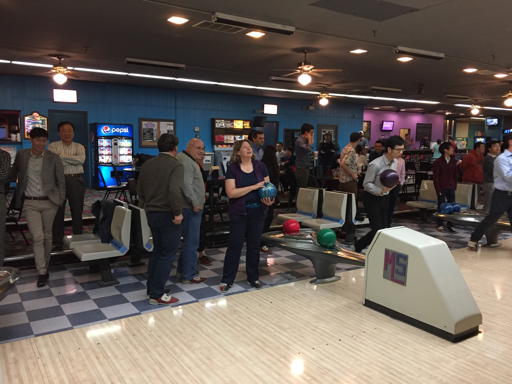 |
| Group Dinner | Bowling Night |
5 November 2016
|
Ghazi Binarandi was invited to give a talk at the Institution of Civil Engineers Technical Meeting on Thursday, 29 September 2016. His talk was entitled Novel Sensing Technologies in Civil Engineering and focused on developments in sensing, data acquisition, and data processing that can be applied to enrich the field of structural health monitoring. Ghazi is a recent Masters graduate of the IISL. 5 October 2016 |
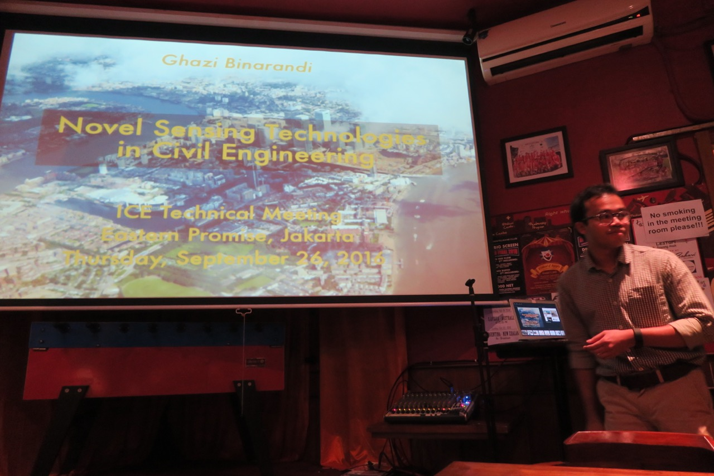 |
The 2016 Asia-Pacific-Euro Summer School on Smart Structures Technology is a three-week programme of coursework, lectures, laboratory exercises and non-academic activities, where participants learn about smart structures technologies and their application. This year, the APESS was held at Cambridge University from June 24th-July 13th, 2016.
Alana Wilbee and Ghazi Binarandi had the opportunity to travel to the U.K. to participate in the summer school. Alana’s team won the SHM competition held as part of the summer school. Ghazi served as the leader of his team.
Prof. Shirley Dyke was invited to lecture at the summer school. Her talk was entitled: Real-time Hybrid Simulation: Design and Execution, given on Friday, 1st July 2016
15 July 2016
The International Conference on Smart Infrastructure and Construction was held from June 27-30, 2016. Hosted by the Cambridge Center for Smart Infrastructure and Construction, the conference brought together researchers from the fields of asset management, resilient infrastructure planning, and structural health monitoring to discuss the value of smart infrastructure to society.
At this conference, Prof. Shirley Dyke presented the paper, Big Visual Data Analytics for Damage Classification in Civil Engineering. Alana Wilbee presented a poster on the paper, Quantifying Recovery for Structures Incorporating Control. Both papers were published in the proceedings of the ICSIC.
The 12th International Workshop on Advanced Smart Materials and Smart Structures Technology (12ANCRiSST) was held in conjunction with the ICSIC. Presenters reported their advances in the fields of structural control, structural health monitoring, and smart materials for sensors and actuators. At the workshop, Ghazi Binarandi presented his work on the Development of a Neural Network Wireless Correction Function.
30 June 2016
Chul Min Yeum (PhD Candidate) and Professor Shirley J Dyke have been awarded the 2015 Hojjat Adeli Award for Innovation in Computing. This award is in recognition for the manuscript authors by them and entitled "Vision based Automated Crack Detection for Bridge Inspection” published in the top-ranked journal Computer-Aided Civil and Infrastructure Engineering in May 2015.
2 May 2016
Francisco Pena is a recipient of the 2015 SE Solutions Scholarship, awarded by the School of Civil Engineering, for a Master’s student for his considerable service to the school and university, including mentoring for the seismic design competition and minority outreach events, and support for his peers inside and outside of the classroom.
Christian Silva is a recipient of the 2016 Magoon Award for Excellence in Teaching, awarded by the College of Engineering. This award is presented for his dedication to outstanding classroom teaching, and exceptional interactions with undergraduate students.
Gaby Ou is the recipient of the 2016 Outstanding Graduate Student Research Award in Civil Engineering, awarded by the College of Engineering. This award is given to a student approaching graduation for research accomplishments in terms of journal publications, presentations, service to the school, and overall contributions to the field.
22 March 2016
Graduate students from Bowen Laboratory attended the 1st Midwest Smart Structures Technology Colloquium in Grafton, Illinois, held on October 31, 2015. This colloquium provided a unique opportunity for these students to meet and interact with an elite group of peers who are performing research on establishing smart structures capabilities in civil and mechanical engineering. Three Purdue University students were awarded best presentation awards, including:
2nd place, "Gaby" Ge Ou, Model Updating in Hybrid Simulation,
4th, place, Daniel Gomez, Human-Structure Interaction Effects in Bridges,
6th place, Chul Min Yeum, What Does the Image Tell You?
1 November 2015
Zhuoxiong "Charlie" Sun, PhD student in the School of Mechanical Engineering, made a research presentations during the 6th International Conference on Advances in Experimental Structural Engineering & 11th International Workshop on Advanced Smart Materials and Smart Structures Technology held jointly at the University of Illinois, August 1-2, 2015. The topic of the presentation was Wireless Structural Control Benchmark Problem
2 August 2015
Several graduate students from the Lyles School of Civil Engineering made presentations on their research during the 6th International Conference on Advances in Experimental Structural Engineering & 11th International Workshop on Advanced Smart Materials and Smart Structures Technology held jointly at the University of Illinois, August 1-2, 2015. The titles of the presentations are:
RTHS with Concurrent Model Updating on A
Distributed Platform, presented by Ge (Gaby) Ou
Fragility Analysis of Structures incorporating
Control Systems, presented by Alana Wilbee
Damped Hysteretic Resistance Identification
of Bouc-Wen Model using Data-based
Model-free Nonlinear Approach, presented by Seungwook Seok
Effective Viscous Damping Ratio in Seismic
Response of Reinforced Concrete Structures, presented by Pedram Khajeh Hesameddin
Development and Evaluation of a Geographically
Distributed Real-time Hybrid Simulation Platform, presented by Ali I. Ozdagli
Development of Adaptive Multi-rate Interface
for Real-time Hybrid Simulation, presented by Amin Maghareh
2 August 2015
A mini-symposium was held in Bowen lab at Purdue university. Nine vistors from top Chinese research universities and members of the IISL exchanged their latest research findings.
26 May 2015
Prof. Bin Xu published two conference papers: "Cracking Monitoring of RC Joints under Cyclic Loadings Based on Wavelet Packet Analysis on Embedded PZT Measurements" and "Icing Monitoring for a Wind Turbine Model Blade with Active PZT Technology" at the proceedings of the 14th ASCE International Conference on Engineering, Science, Construction and Operations.
27 October 2014
Ali Imrak Ozdagli and Amin Maghareh won the 2013 NEES Simulation Competition in Reno, USA. The model can be found here.
1 August 2013
Amin Maghareh gave presentation in the 11th International Conference on Structural Safety & Reliability, ICOSSAR 2013. His presenetation was entitled, “Investigation of the effect of Transfer System Delay on Multi-degree of Freedom Real-time Hybrid Simulation.“
17 June 2013
Amin Maghareh gave presentation in the International Conference on Computing, Networking, and Communications, ICNC 2013. His presenetation was entitled, “Investigation of Uncertainties Associated with Actuation Modeling Error and Sensor Noise on Real-Time Hybrid Simulation Performance.“
28 January 2013
Xiuyu Gao successfully defended his PhD. The title of his dissertation is "Development of a Robust Framework for Real-Time Hybrid Simulation: From Dynamical System, Motion Control to Experimental Error Verification."
10 December 2012
Nestor E. Castaneda Aguilar successfully defended his PhD. The title of his dissertation is "Development and Validation of a Real-Time Computational Framework for Hybrid Simulation of Dynamically-Excited Steel Frame Structures".
10 December 2012
Tony Friedman successfully defended his PhD. The title of his dissertation is "Development and Experimental Validation of a New Control Strategy Considering Device Dynamics for Large-Scale MR Dampers using Real-Time Hybrid Simulatio."
20 November 2012
Ali Irmak Ozdagli gave presentation during the 15th World Conference on Earthquake Engineering, held September 24-28, 2012, in Lisbon, Portugal. His presentation was entitled “Verification of Real-Time Hybrid Simulation with Shake Table Tests”
24 September 2012
Prof. Shirley Dyke participated in the 2nd Workshop on China-US Collaboration for
Disaster Evolution/Resilience of Civil Infrastructure and Urban Environment
Her plenary lecture was entitled "Emerging Opportunities in Real-time and Distributed Hybrid Simulation"
9 December 2011
Xiuyu Gao and Ali Irmak Ozdagli gave presentations during the Advances in Real-Time Hybrid Simulation workshop, held October 10-11, 2011, at the Lehigh Network for Earthquake Engineering Simulation
(NEES) facility.
Xiuyu's presentation was entitled “Real Time Hybrid Testing from System, Control to Experimental
Error"
Ali's presentation was entitled "Control-oriented System Identification of a Large Frame for RTHS”
10 October 2011
On Friday September 2nd we will be holding an Open House for the IISL Laboratory.
The event will be held at the Bowen Laboratory (see address below) from 3:00-6:00pm. It will include live demos geared towards learning what happens during an earthquake and how to test buildings to destruction!
Refreshments will be available. Please, no shorts or open toed shoes.
Address:
1040 South River Road West
Lafayette, IN 47907
2 September 2011
Xiuyu Gao and Wei Song presented papers "Application of pseudospectral method in stochastic optimal control of nonlinear structural systems" and "Experimental Validation of a Scaled Instrument for Real-time Hybrid Testing" respectively at the 2011 American Control Conference in San Francisco, CA.
29 June 2011
Gaby (Ge) Ou participated in holding the NEEShub Bootcamp webinar on Friday, February 4th. She made a presentation focusing on how to upload data and use the collaborative tools within the NEEShub.
9 February 2011
Sriram Krishnan and Charlie (Zhuxiong) Sun participated in the recent Workshop on Cyber-Physical Co-Design of Wireless Monitoring and Control for Civil Infrastructure, held at the University of Illinois Seibel Center from February 17-18th. They each made presentations entitled Evaluating the Performance of Distributed Approaches (Krishnan) and for Modal Identification Review of Recent Smart Sensor Research for SHM using the Truss in the SSTL (Sun).
9 February 2011
Nestor Castaneda recently was awarded a SIRG fellowship from Purdue University's Cybercenter to partially support his education this year.
9 February 2011
Sriram Krishnan presented a paper entitled "Validation of a Multi-level Damage Detection Approach Using a Full Scale Highway Truss," at the SPIE Smart Structures and Nondestructive Evaluation Symposium, San Diego, California, March 15-18, 2011
20 March 2011